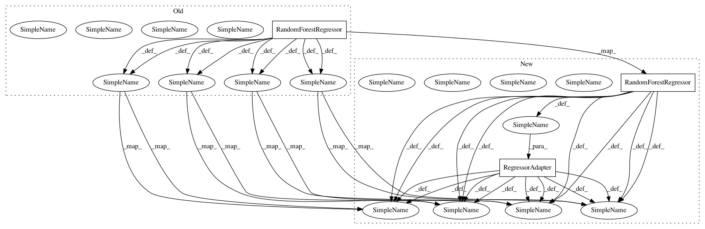

e2f021a5e4444befdb9e5926b96bc96c408faa85,examples/cross_validation.py,,,#,30
Before Change
// -----------------------------------------------------------------------------
data = load_diabetes()
icp = IcpRegressor(RegressorNc(RandomForestRegressor(n_estimators=100),
SignErrorErrFunc()))
icp_cv = RegIcpCvHelper(icp)
scores = cross_val_score(icp_cv,
data.data,
data.target,
iterations=10,
folds=10,
scoring_funcs=[reg_mean_errors, reg_median_size],
significance_levels=[0.05, 0.1, 0.2])
print("Signed error regression: diabetes")
scores = scores.drop(["fold", "iter"], axis=1)
print(scores.groupby(["significance"]).mean())
// -----------------------------------------------------------------------------
After Change
// -----------------------------------------------------------------------------
data = load_diabetes()
icp = IcpRegressor(RegressorNc(RegressorAdapter(RandomForestRegressor(n_estimators=100)),
SignErrorErrFunc()))
icp_cv = RegIcpCvHelper(icp)
scores = cross_val_score(icp_cv,
data.data,
data.target,
iterations=5,
folds=5,
scoring_funcs=[reg_mean_errors, reg_median_size],
significance_levels=[0.05, 0.1, 0.2])
print("Signed error regression: diabetes")
scores = scores.drop(["fold", "iter"], axis=1)
print(scores.groupby(["significance"]).mean())
// -----------------------------------------------------------------------------
In pattern: SUPERPATTERN
Frequency: 6
Non-data size: 3
Instances
Project Name: donlnz/nonconformist
Commit Name: e2f021a5e4444befdb9e5926b96bc96c408faa85
Time: 2016-09-09
Author: henrik.linusson@gmail.com
File Name: examples/cross_validation.py
Class Name:
Method Name: